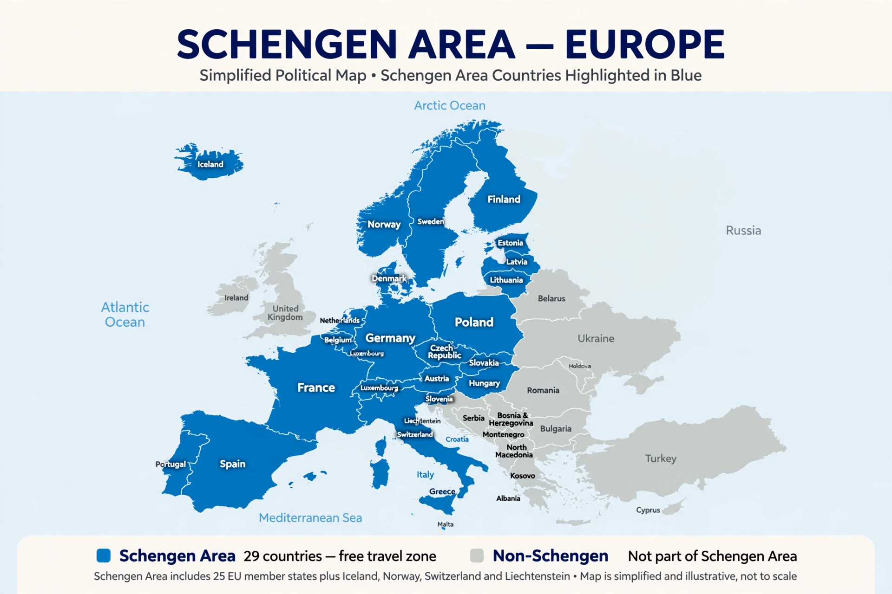

| Schengen Area | |
|---|---|
 Map of the Schengen Area | |
| Type | Area of open borders |
| Members | 29 European countries |
| Established | 26 March 1995 |
| Population | ~450 million |
| Area | ~4.6 million km² |
The Schengen Area is an area encompassing 29 European countries that have officially abolished border controls at their mutual borders. Being an element within the wider area of freedom, security and justice policy of the European Union (EU), it mostly functions as a single jurisdiction under a common visa policy for international travel purposes.
The area is named after the 1985 Schengen Agreement and the 1990 Schengen Convention, both signed in Schengen, Luxembourg. Of the 27 EU member states, 25 participate in the Schengen Area. Cyprus and Ireland are the two EU members that do not participate; Ireland instead operates a Common Travel Area with the United Kingdom. Four European Free Trade Association (EFTA) member states — Iceland, Liechtenstein, Norway, and Switzerland — are not members of the EU but have signed agreements allowing them to participate.
The Schengen Agreement was signed on 14 June 1985 by the five member states of the Benelux Economic Union (Belgium, Luxembourg, and the Netherlands), France, and West Germany, aboard the river cruise ship Princesse Marie-Astrid on the river Moselle near Schengen. The Schengen Convention, signed in 1990, proposed the complete abolition of systematic internal border controls and a common visa policy. The agreement took practical effect on 26 March 1995.
Bulgaria and Romania became full members on 1 January 2025, when land border controls were lifted following the earlier removal of air and sea border controls in March 2024, bringing the total to 29 countries.
Within the Schengen Area, internal border checks are abolished and citizens enjoy freedom of movement. A common visa policy applies: a short-stay Schengen visa issued by any member state is generally valid for travel throughout the area. External border controls are coordinated, supported by the Schengen Information System (SIS) database and the European Border and Coast Guard Agency (Frontex).
Member states may temporarily reintroduce internal border controls in response to a serious threat to public policy or internal security. Several states did so during the European migration crisis of 2015–2016 and during the COVID-19 pandemic.
Categories: European Union · Border control · 1995 establishments in Europe